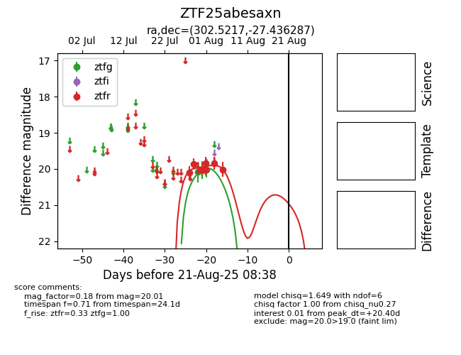

Target ZTF25abesaxn at 2025-08-21 08:38, see:
FINK: fink-portal.org/ZTF25abesaxn
Lasair: lasair-ztf.lsst.ac.uk/objects/ZTF25abesaxn
ALeRCE: alerce.online/object/ZTF25abesaxn
alt names
ZTF25abesaxn (ztf,alerce)
coordinates:
equatorial (ra, dec) = (302.5217,-27.43629)
galactic (l, b) = (14.7868,-28.41640)
photometry
last ztfg=20.01, ztfr=20.01
4 ztfg, 7 ztfr detections
